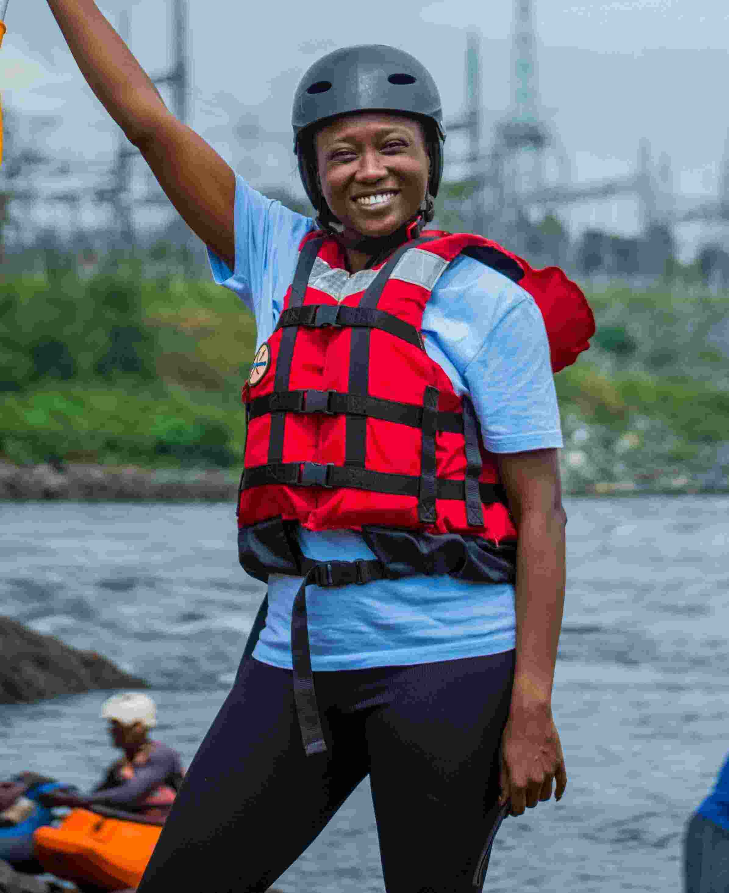
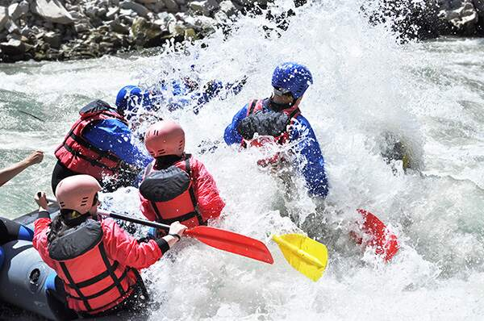
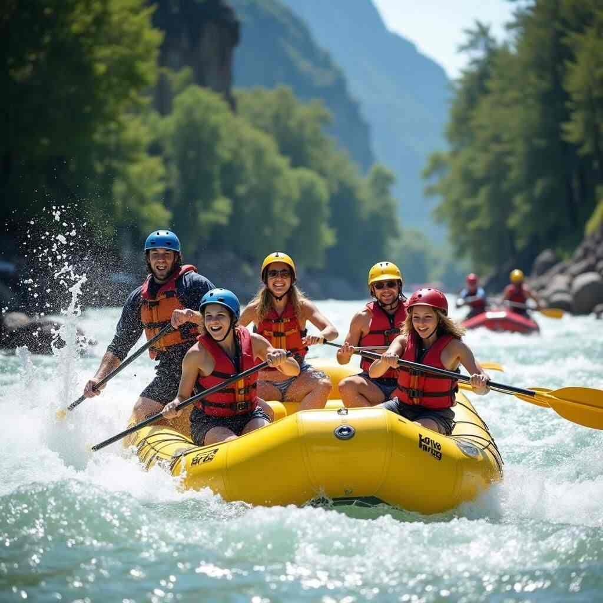
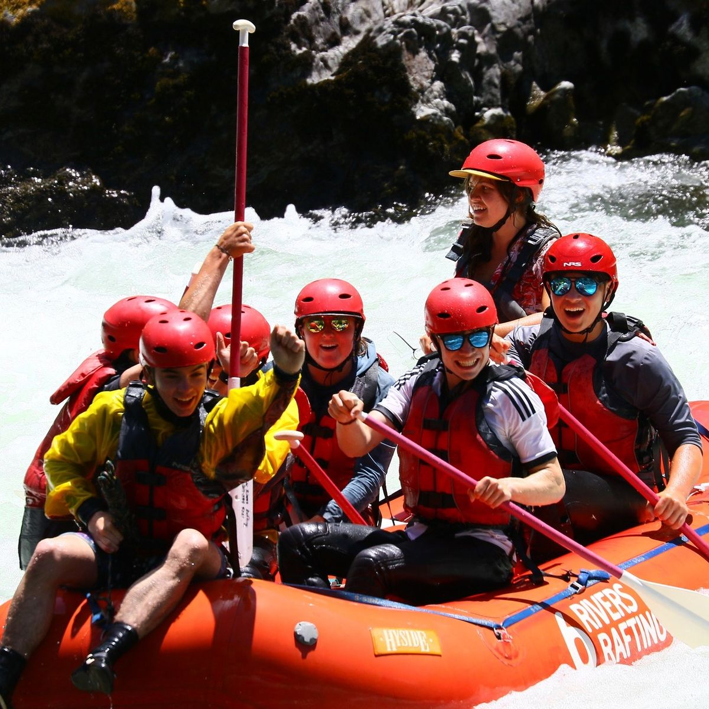
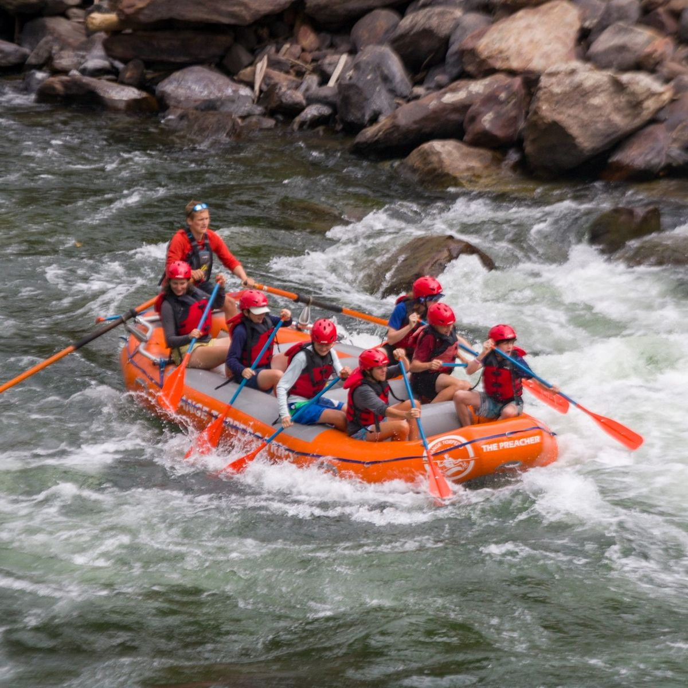
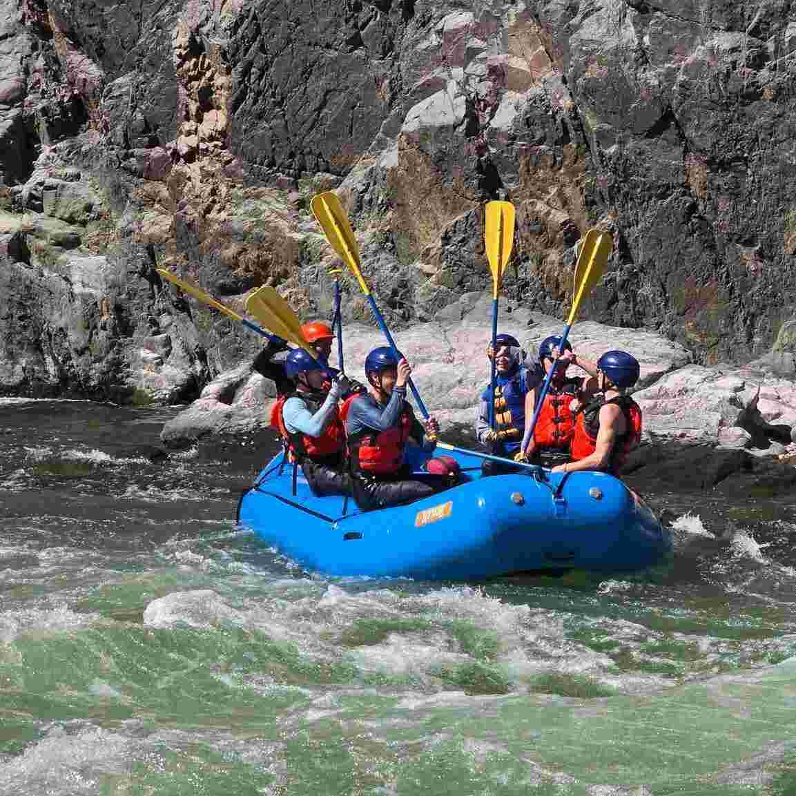

Your adventure starts here! We offer thrilling rafting experiences for all skill levels. Join us for an unforgettable journey down the river.



Your adventure starts here! We offer thrilling rafting experiences for all skill levels. Join us for an unforgettable journey down the river.
Dry-Oar Rafting was founded in 2005 by a group of passionate adventurers who wanted to share their love for rafting with others. Over the years, we have grown into a trusted name in the rafting industry, known for our commitment to safety and exceptional customer service.

Our experienced guides are dedicated to providing you with an unforgettable rafting experience, whether you're a beginner or an experienced rafter. We take pride in our knowledgeable staff and our commitment to preserving the natural beauty of the rivers we raft on.




